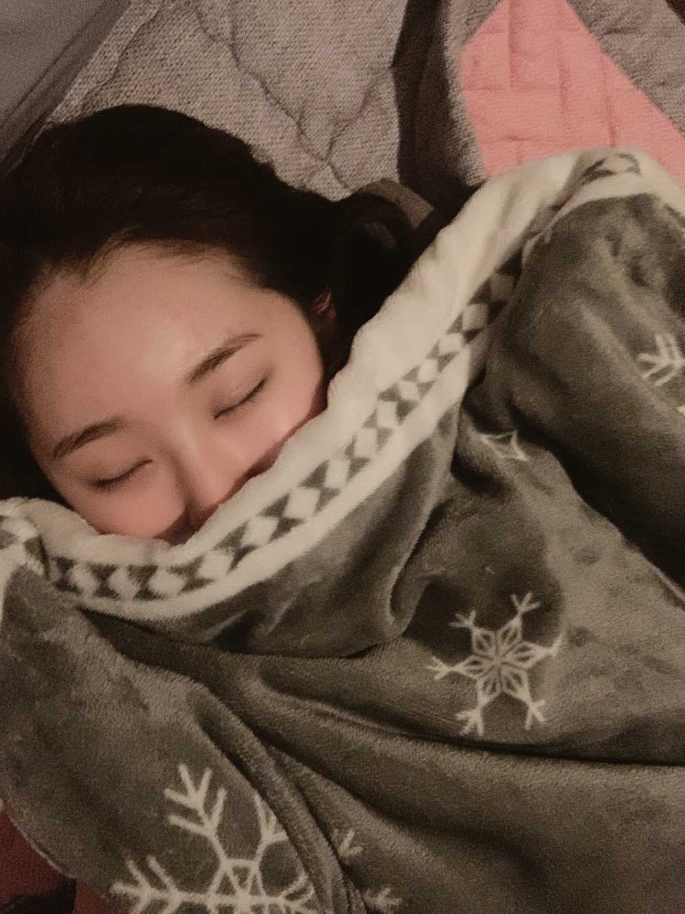
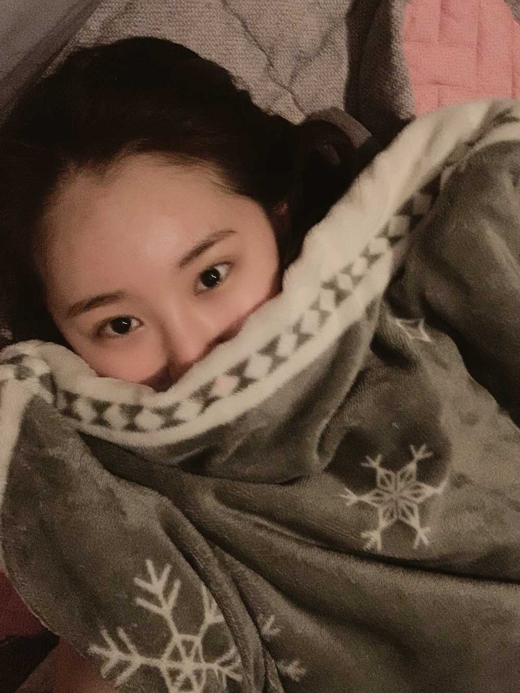
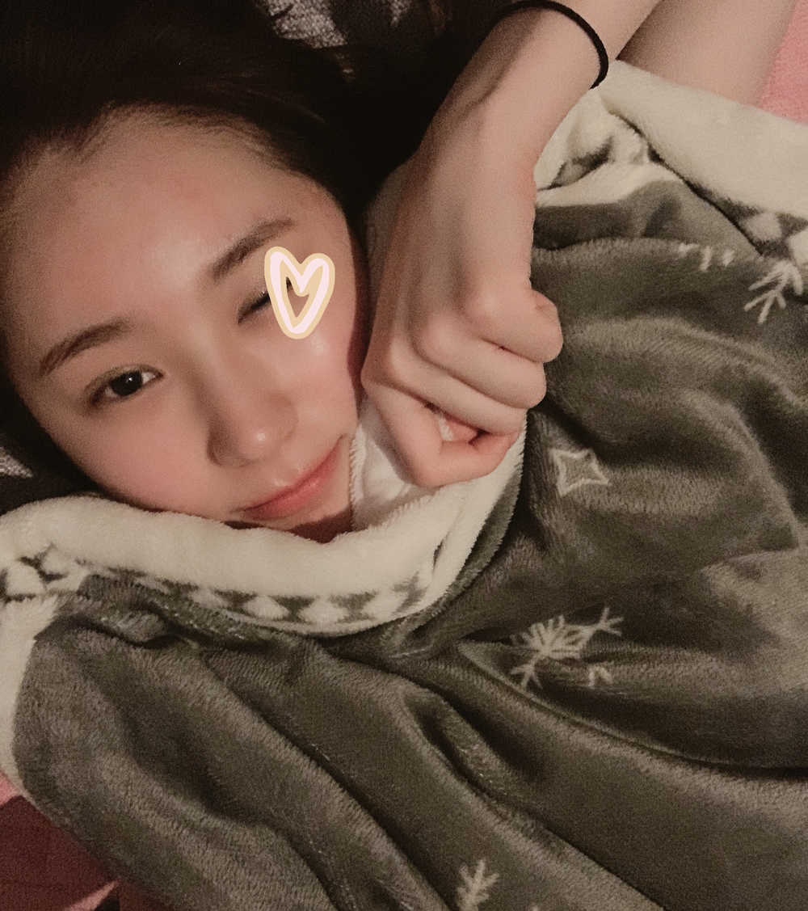

이호 잘 잤어요??


항상 점심 때쯤 일어나서는 굿모닝이라고 인사하는...🤔
오늘 하루도 힘내세요♥️
제가 사랑하는 모든 사람들..
아낌없이 응원하고! 마음과 몸 모두 건강하시길
진심으로 바라요🌸
나도 이제 진짜 침대에서 일어나야겠다!

윙크 사진 이제 잘 찍을 수 있어요!!
예전에는 진짜 윙크 사진 아예 못 건졌거나
아니면 15번 찍어서 1장 건졌다면?
지금은 3번 정도 찍으면 1장 건진답니다!
음.. 뭐 윙크 사진이 100% 맘에 드는 건 아니지만 ㅎㅎ
이 정도면....🤔 괜찮지 않을까...🙄라고 합리화를 하죠
또 왜 말이 술술 나오지
정신 안 차리면 주제가 바뀝니다..
이채연씨 정신 차리세요
그리고 일어나시죠 이제?
You have to leave in 20mins😒